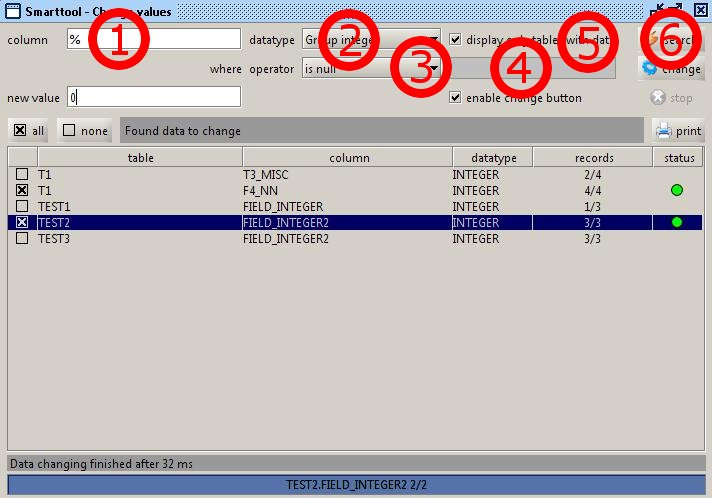
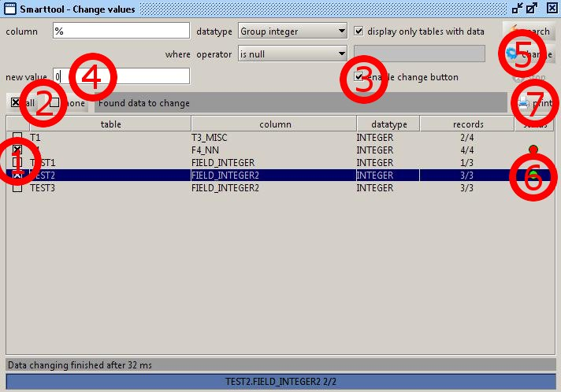

Smarttools Plugin
- Change values -
With this module you can change column values over many tables.
To find columns for changing the values, follow these steps:

1. Type in a column name, which will be used.
You can input here the wildcard % as last character to use a column name group,
which will be begin with your input without the wildcard.
2. Now choose the data type for your selected column. You can choose between many
of the standard sql data types. You can also select one of the data groups
- Group integer (BIGINT, INTEGER, SMALLINT and TINYINT),
- Group char (CHAR, LONGVARCHAR and VARCHAR) or
- Group numeric (DECIMAL, DOUBLE, FLOAT, NUMERIC and REAL).
3. After selecting the data type, you can choose the operator, you want to use.
4. If you have selected an operator except is null and is not null, you can input your searching value.
If you have selected a character data type, you can use the wildcard % with the value like a normal sql statement.
5. Select displaying only tables with data, if you want only to display tables in the result list
with one or more data rows.
6. Start the searching.
You can terminate searching by clicking the stop button.
The result will be displayed in the table.
On the column records you see as first number the founded rows, as the second number the record count of the table.
To change the values of the columns in the result table, follow these steps:

1. Mark the entries, which data you want to change.
2. You can also use the buttons all or none to mark or demark all entries in the result table.
3. Select enable change button.
The change button and the input field for the new value will be enabled.
4. Now input the new value for all the selected entries.
5. Start changing the selected entries.
6. In the last column, you can see the working status.
- a white circle describe an entry for changing
- a green circle describe an entry with correct changed data
- and a red circle describe an entry with an error on changing to the new value.
You must take a look into the log file for details.
7. If there is a result displayed in the table, the print button will be activated to print the result.